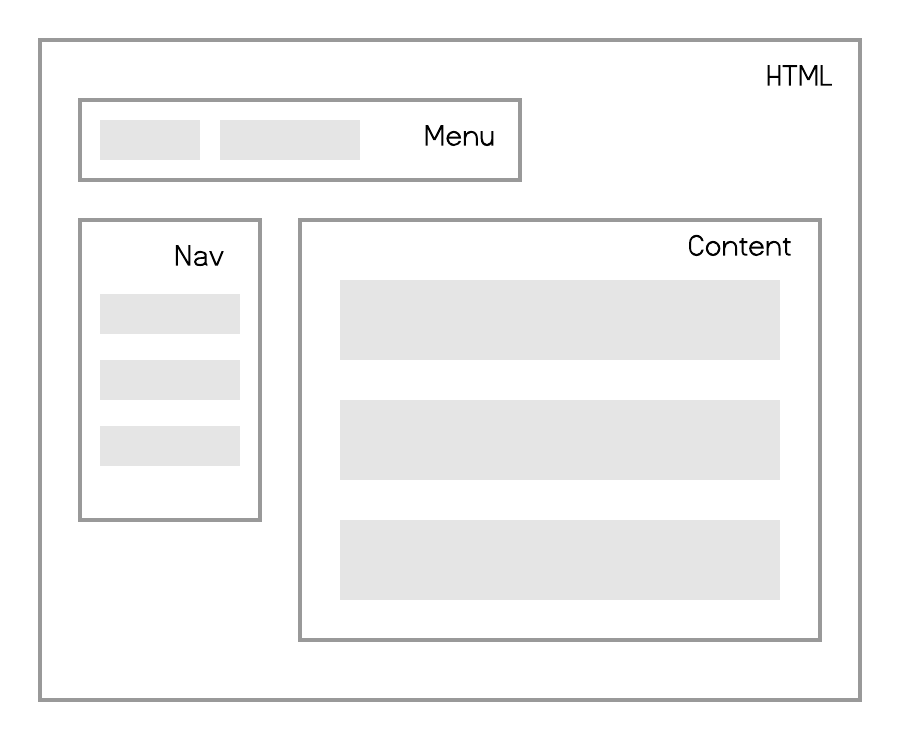
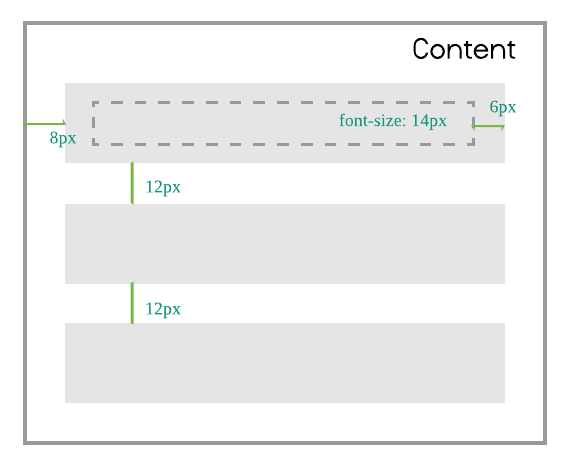
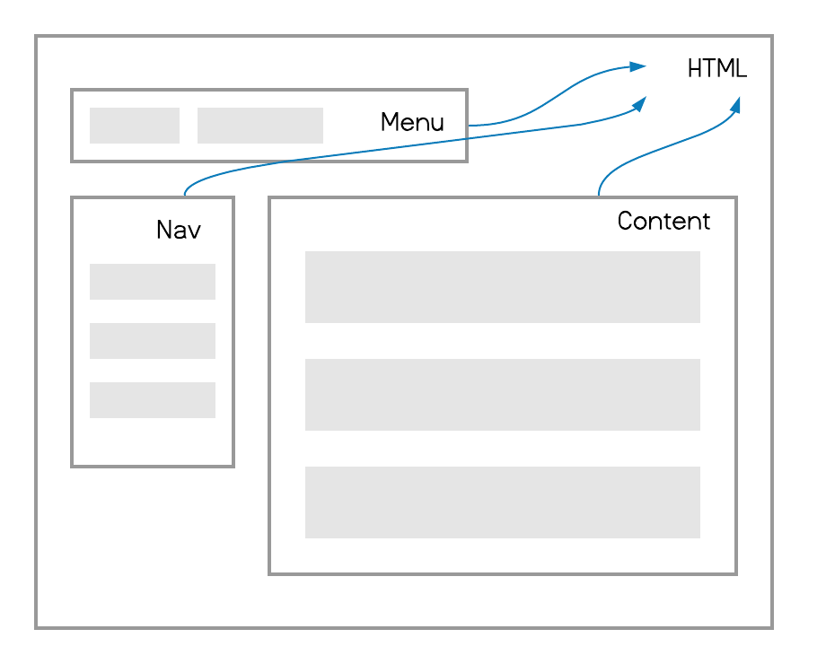
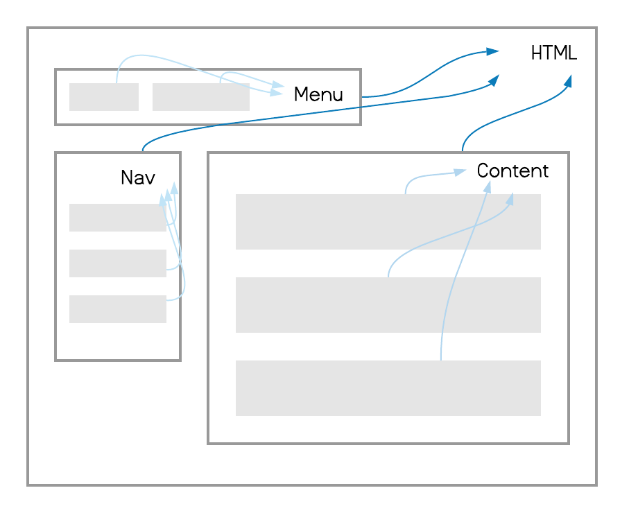

이 글은 픽셀 없는(pixeless) CSS 레이아웃을 제시하고 그것을 달성하기 위한 기술적인 방법을 소개합니다.
왜 픽셀(px)을 없애야 할까?
더 이상 사용자들은 똑같은 해상도를 가진 모니터로 웹사이트를 접속하지 않습니다. 모바일, 태블릿등 다양한 기기로 웹사이트를 이용하며 그것들의 화면크기는 제각각입니다.
예전에는 특정 기기의 화면크기에 맞춰 모바일 전용 디자인을 따로 하기도 했습니다. 그러나 대응해야 되는 기기의 수가 증가하면서 디자인 트렌드는 매번 새로 하는 대신, 화면크기 변화에 유연(flexible)하게 대응하는 쪽으로 진화했습니다.
유연한 디자인은 대체로 가변(fluid)적이고 화면크기에 맞춰 반응하는 특징을 지닙니다. 하지만 픽셀은 절대단위이기 때문에 픽셀을 사용한 속성은 화면크기가 바뀌었을 때 저절로 반응하지 않습니다. 개발자가 일일히 화면크기에 맞춰 변경되는 내용을 코드로 기술해야 합니다. 이런 작업은 디자이너가 화면크기에 따라 여러 벌의 디자인을 했던 것과 다르지 않습니다. 이제 개발자는 픽셀 사용 보다 화면크기에 유연하게 대응할 수 있는 상대단위(rem, em, %) 사용을 먼저 고려해야 합니다.
rem 활용하기
rem은 루트(html)의 글자크기를 곱해 값을 정합니다. 예를 들어 루트 글자크기가 16px이고 너비를 50rem으로 지정하면 적용되는 실제 너비는 16px * 50rem = 800px이 됩니다.
1 | html { |
rem을 사용하면 모든 요소에 미디어쿼리를 사용하지 않아도 됩니다. 단지 화면너비에 따라 루트의 글자크기를 바꾸는 것만으로 모든 요소의 크기를 늘리거나 줄일 수 있습니다.
1 | @media (max-width:768px) { |
픽셀을 포기할 수 없는 이유
픽셀 대신 상대단위(rem, em, %)를 쓰기 어려운 이유는 곧바로 가늠되지 않기 때문입니다. 특히 디자이너와 협업이 불가피한 영역에서 이런 비직관적인 단위는 의사소통을 방해합니다. 하지만 이 문제는 간단하게 해결할 수 있습니다. 바로 픽셀로 기술하되 상대단위로 변환하는 방법을 통해서 말이죠.
scss 변환함수 활용하기
scss를 사용해 px를 rem으로 바꾸는 변환함수를 작성해봅시다.
1 | @function rem($px, $base: 16px) { |
이제 rem으로 작성했던 css를 아래 같이 픽셀로 표기된 scss코드로 바꿀 수 있습니다.
1 | html { |
컴포넌트
현대 웹 프론트엔 개발의 특징 중 하나는 컴포넌트입니다. 과거 웹페이지를 html, css, js의 구성으로 정의했다면 지금은 그 중간에 컴포넌트가 존재합니다. 웹페이지를 구성하는 각각의 컴포넌트가 자신만의 html, css, js를 소유합니다. 따라서 화면크기에 맞춰 반응하는 1차 단위로 엘리먼트 요소 대신, 컴포넌트를 사용하는 것이 바람직합니다. 컴포넌트 단위로 화면크기에 대한 예외를 준다면 그만큼 엘리먼트 요소에 일일히 작성해야 했던 변경 내용을 많이 줄일 수 있습니다.
BEM(css 방법론)과 em 활용하기
BEM은 컴포넌트 기반의 css 방법론입니다. 여기에 em을 활용해 컴포넌트 단위의 반응을 실현할 수 있습니다. 먼저 rem과 마찬가지로 px를 em으로 변환하는 함수를 만듭니다.
1 | @function em($px, $base: 16px) { |
컴포넌트 최상위(BEM에서 Block이라고 부르는) 글자크기를 1rem으로 합니다. 그리고 컴포넌트 내에서 사용되는 크기 단위로 em을 사용합니다. 결국 컴포넌트 내 모든 요소의 크기가 컴포넌트 최상위 글자크기에 대한 상대값이 되도록 합니다.
em으로 변환할 때, em의 특성을 반드시 이해하고 있어야 하는데요,font-size에서 em은 부모 요소 font-size에 대한 상대값입니다. 반면font-size가 아닌 속성에서는 em은 현재 요소 font-size에 대한 상대값 입니다. 아래의.card__title-strong주의깊게 봐주세요..card__title안에.card__title-strong가 있는 구조라고 가정하고 있습니다.
1 | .card { |
이제 아래 같이 컴포넌트에 선언한 글자크기를 바꾸는 것으로 컴포넌트 단위의 예외를 줄 수 있습니다.
1 | @media (max-width:768px) { |
컴포넌트 글자크기 단위로에 rem을 사용했기 때문에 루트 글자크기로 전체 크기비를 조정하는 것은 여전히 유효합니다. 만약 컴포넌트 크기로 1rem(루트 글자크기)이 아닌, 다른 크기를 사용하고 싶다면 rem함수를 이용하세요.
1 | $card_base: 12px; |
기본 레이아웃 구현하기
간단한 예제를 통해 지금까지 내용을 정리합시다.

이 웹사이트는 크게 menu, nav, content 컴포넌트로 구성되어 있습니다. 첫번째 할 일은 전체 웹사이트의 기본 글자크기를 지정하는 것입니다.
1 | html { |
그리고 모든 컴포넌트 최상위 글자크기를 모두 1rem으로 합니다.
1 | .menu { |
이제 웹페이지를 스타일링을 시작합시다. content 컴포넌트는 아래 이미지와 같은 스타일을 가집니다.

content는 8px 패딩이 존재하고 3개의 item 사이의 위아래 간격은 12px입니다. item은 6px의 패딩이 있고 글자크기는 14px입니다. scss로 이것을 스타일링하면 다음과 같습니다.
1 | .content { |
아까 컴포넌트 최상위에 1rem을 주었습니다. 그래서 각 컴포넌트는 아래 그림처럼 루트 글자크기에 의해 제어됩니다.

루트(html)의 글자크기를 화면너비에 따라 바꾸면 전체 요소의 크기비가 일괄적으로 변경됩니다. 여기서 include-media란 scss 미디어쿼리 라이브러리를 사용하면 좀 더 심플한 반응형 코드를 작성 할 수 있습니다.
1 | html { |
그리고 컴포넌트 및 컴포넌트 구성요소의 스타일링 모두 em을 사용했는데요, 결국 컴포넌트의 구성요소는 컴포넌트 최상위 글자크기를 바라보게 됩니다.

컴포넌트 최상위(블럭요소) 글자크기를 변경해서 컴포넌트 단위의 예외가 가능합니다.
1 | .menu{ |
하위 엘리먼트 요소를 직접 수정하는 일은 정말 최후의 수단(🗡️)이 됩니다.
1 | .content { |
액자(frame) 컴포넌트에서 상대단위 문제
액자 컴포넌트란 외부로 컨텐츠를 입력받아 구성하는 컴포넌트를 의미합니다. react로 예를 들면 아래 코드에서 Frame 컴포넌트가 이에 해당합니다.
1 | function App() { |
output1
2
3
4
5
6<div class="app">
I love
<div class="frame">
<em class="app__em">css</em> ❤️
</div>
</div>
Frame 내부에 선언된 컨텐츠는 App에 소속됩니다. 그러나 실제 화면에서는 Frame 안에 그려지게 되고 컨텐츠 상대단위(em) 역시 App이 아닌, Frame 요소에 영향을 받습니다. 이렇게 되면 컴포넌트 단위 제어가 불가능할 뿐만 아니라 Frame 컴포넌트의 코드 변경때 마다 의도치 않은 스타일 변화가 생길 수 있습니다.
해결책
저는 Frame 컴포넌트와 입력 컨텐츠 사이에 font-size를 rem으로 다시 정의해서 이 문제를 해결하고 있습니다.
1 | function App() { |
output1
2
3
4
5
6<div class="app">
I love
<div class="frame app__frame">
<em class="app__em">css</em> ❤️
</div>
</div>
scss1
2
3
4
5
6
7
8
9
10
11
12
13.app {
@mixin init {
font-size: 1rem;
@include media('<=960'){ font-size: 1.2rem }
}
@include init;
&__frame { @include init; } /* 👈 font-size를 다시 재정의합니다 */
&__em {
font-size: em(18px);
}
}
여러 방법을 시도했는데요, 결국 이 방법이 가장 클린했습니다. 😥 혹시 더 나은 방법이 있다면 댓글로 알려주세요.
위 코드는 app__frame 클래스명을 Frame의 props로 전달하고 있는데 만약 이것이 여의치 않다면 컨텐츠를 새 div로 감싸거나 별도 컴포넌트로 분리하는 방법을 고려해 볼 수도 있습니다.
백분율(percent)를 픽셀로 표기하기
변환을 통해서 상대단위를 유지하되 표기방식만 픽셀을 사용하는 것은 생각 이상으로 매우 중요합니다. 상대단위의 비직관성 때문에 개발자는 차라리 엘리먼트의 가변성을 포기하고 픽셀로 처리하고 싶은 유혹(디자이너와 적당한 타협을 통해)에 쉽사리 빠지기 때문입니다.
1 | .box { |
디자이너에게 받은 box 엘리먼트의 크기는 480px * 360px이고 이 안에는 3개의 별이 위치해 있습니다. (디자이너는 별의 위치가 매우 정확하기를 기대합니다 😵)
위 scss 코드는 이것을 구현한 예제인데요, 만약 이 컨테이너가 단지 화면너비 전부를 차지할 뿐이라면 480px의 고정된 크기 대신 상대단위인 100%를 쓰는 것이 바람직합니다. 미디어쿼리 작성 없이도 화면너비에 맞춰 자동으로 크기를 변경할 수 있기 때문입니다.
박스에 종횡비(aspect-ratio) 적용하기
박스 엘리먼트 너비를 100%로 지정하면 너비 변화만큼 높이가 달라져야 합니다. 유명한 Uncle Dave’s Ol’ Padded Box 방법을 사용하기로 합시다. 이 방법은 padding, margin 속성의 높이 단위가 백분율(%)이면 부모의 요소의 너비를 기준으로 계산하는 원리를 이용합니다.
1 | .box { |
percentage함수 활용하기
scss에는 이미 percentage라는 빌트인(builtin) 함수가 있습니다. 이 함수를 이용해 별의 위치를 픽셀에서 퍼센트로 손쉽게 변환할 수 있습니다.
1 | .box { |
앞서 작성한 가상요소(before)의 padding-top 속성도 계산식 대신, percentage함수로 교체합니다.
1 | .box { |
화면너비에 따라 박스와 내부 모든 요소의 위치가 비율을 유지하며 바뀌는 것을 볼 수 있습니다.
화면너비 변화와 동일하지 않은 비례 요소 변환하기
백분율(percent)을 사용해 반응형 코드를 작성하면 각 요소의 크기, 위치등이 화면너비 변화와 1(비례상수)로 정비례합니다. 그러나 종종 디자인 요구사항은 화면너비 변화율과 일치하지 않을 수 있습니다. 이때 대응해야 하는 화면 너비 지점에서 요소를 직접 수정하는 방법을 흔히 선택합니다.
1 | .content { |
그러나 이 방법은 미디어쿼리 조건에 도달하기 직전의 화면 너비에서 레이아웃이 부자연스럽거나 깨지는 현상이 발생합니다.
vw 활용하기
vw는 화면너비 백분율(percent)로 크기를 정할 수 있는 단위입니다. 예를 들어 화면너비가 1980px이면 50vw는 990px이고 10vw는 198px이 됩니다. vw를 사용하면 화면너비를 엘리먼트로 직접 가져와 계산식을 쓸 수 있기 때문에 화면너비에 비례한(그러나 반드시 1로 정비례할 필요없는) 크기를 지정할 수 있습니다.
content 부모요소 너비가 화면너비와 동일하다고 가정하고 대응해야 하는 화면너비 사이에서의 content 너비 변화율(기울기)을 계산합시다.
1 | $from-screen: 960px; |
$rate는 화면너비가 1px 커질 때 마다 증가해야 하는 크기입니다. 이 변화율과 화면너비(100vw)를 곱한 식(calc($rate * 100vw))을 속성에 사용하면 화면너비에 따라 원하는 변화율(기울기)로 값이 바뀌는 엘리먼트 크기를 지정할 수 있습니다.
그러나 아직 조금 부족합니다. 화면너비가 $rate크기만큼 증가하지만 화면너비가 $from-screen이나 $to-screen에 도달해도 값은 여전히 $from 또는 $to가 되지 않습니다. 1차원 함수 그래프(100vw가 x인)를 생각하면 되는데요, 화면너비가 $from-screen에 도달했을 때 $from이 되게끔 절대단위 값으로 보정해야 합니다. (1차 함수 그래프의 평행이동과 똑같습니다 👀)
1 | $width: calc(#{$ratio * 100}vw + #{-($ratio * $from-screen) + $from}); |
지금은 $from-screen을 기준으로 보정했지만 변화율(기울기)에 의해 자동으로 화면너비가 $to-screen일때 $to가 됩니다.
아래는 지금까지 내용을 scss함수로 정의한 것입니다.
1 | @function between($from, $to, $from-screen, $to-screen) { |
미디어쿼리 대신, 정의한 between함수로 content를 스탕일링합니다.
1 | .content { |
$from-screen, $to-screen 사이를 벗어난 화면너비에서 크기가 너무 커지거나 줄어드는 것을 방지하기 위해서 아래처럼 제약을 추가할 수도 있습니다.
1 | .content { |
여기서는 max-width, min-width, 미디어쿼리로 제약을 걸었지만 최신 브라우저에서는 min(), max(), clamp()를 사용하는 방법도 있습니다.
모든 것을 상대단위로 바꾸지 마세요
마지막으로 당부하고 싶은 점은 모든 것을 상대단위(rem, em, %)로 바꿀 필요는 없단 사실입니다. 가변성이 없다면(특히 border같은) 픽셀를 사용하세요. 또 가변성은 존재하나 미약하고 상대단위로 변환하는 공식이 너무 복잡한 상황에서도 픽셀과 미디어쿼리를 사용합시다. 배보다 배꼽이 더 클 수 있기 때문입니다.
마치며
scss를 사용하고 있다면 제가 만든 thejungle를, css-in-js 환경이라면 polished.js로 지금까지 사용한 헬퍼함수를 따로 만들지 않고 바로 쓸 수 있습니다.
저는 최근 몇년 전부터 이 방법(픽셀리스 css 레이아웃)을 사용해 제품을 개발해 왔습니다. 그리고 다양한 해상도를 가진 기기들을 수월하게 대응할 수 있게 되면서 크게 만족했습니다. 다른 분들도 똑같은 성취감을 얻을 것이라고 믿습니다. 😎
만약 다른 의견이나 제안이 있다면 댓글를 남겨주세요. 답변드리겠습니다. 감사합니다.
작성자

BYUNGI
https://github.com/skt-t1-byungiwrite less, do more